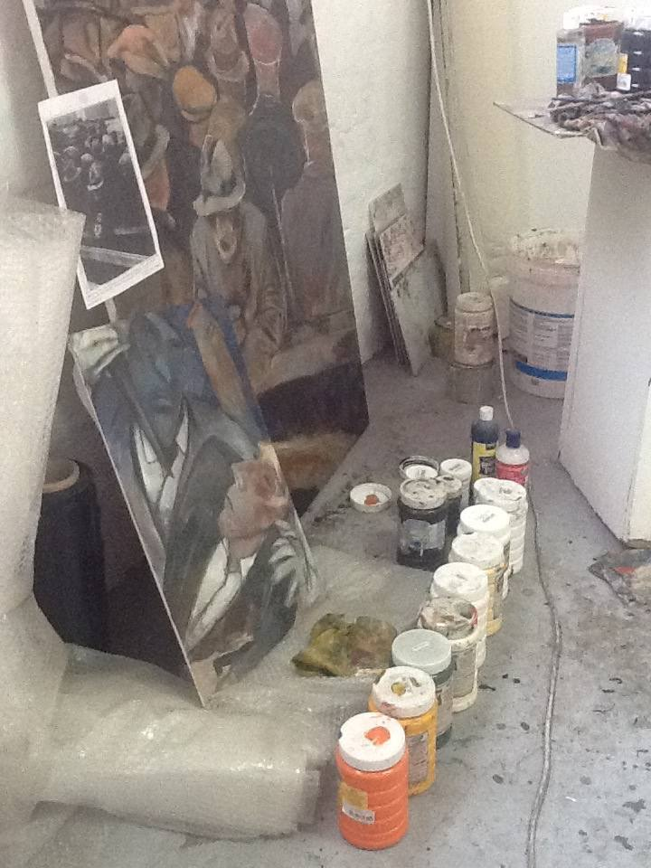

Biography
Born in Colombia, Fidel Regueros trained in sculpture at the Bulgarian National Academy of Fine Arts, graduating from the Academy of Art Nicolás Pavlovich in Sofia in 1978. He spent the following years directing animation at Bulgaria's Boyana Studios — including his directorial debut, Cube and Sphere — before moving to Harare, Zimbabwe, where he worked through the 1990s as an art director, animator and illustrator for agencies including Young & Rubicam and Ink Spots Studio. From 2001 he returned to Colombia, lecturing in animation and drawing at the Universidad Jorge Tadeo Lozano and the National School of Caricature in Bogotá. From 2011 he lived and worked in Johannesburg, South Africa, teaching Life Drawing and Animation Design at NEMISA, before returning to Sofia, Bulgaria, where he is now based.
Across drawing, painting and sculpture, the work returns again and again to the human figure — portraits of family, friends and strangers caught mid-gesture, workers absorbed in their tasks, and self-portraits that double as quiet self-interrogation. Dream logic and invented creatures surface often, alongside a recurring attention to animals and the natural world that traces back to his years illustrating scientific and environmental subjects in Zimbabwe and Colombia. Everyday domestic moments — a shave, a prayer, a pair of shoes left by a door — sit comfortably beside political caricature and social commentary, a legacy of years spent illustrating for magazines and public information campaigns. What holds it together is less a single style than a way of looking: patient, observational, unafraid of both tenderness and the grotesque.
Sculpture Ink & charcoal Gouache & watercolour Oil on canvas Animation & illustration Mixed media